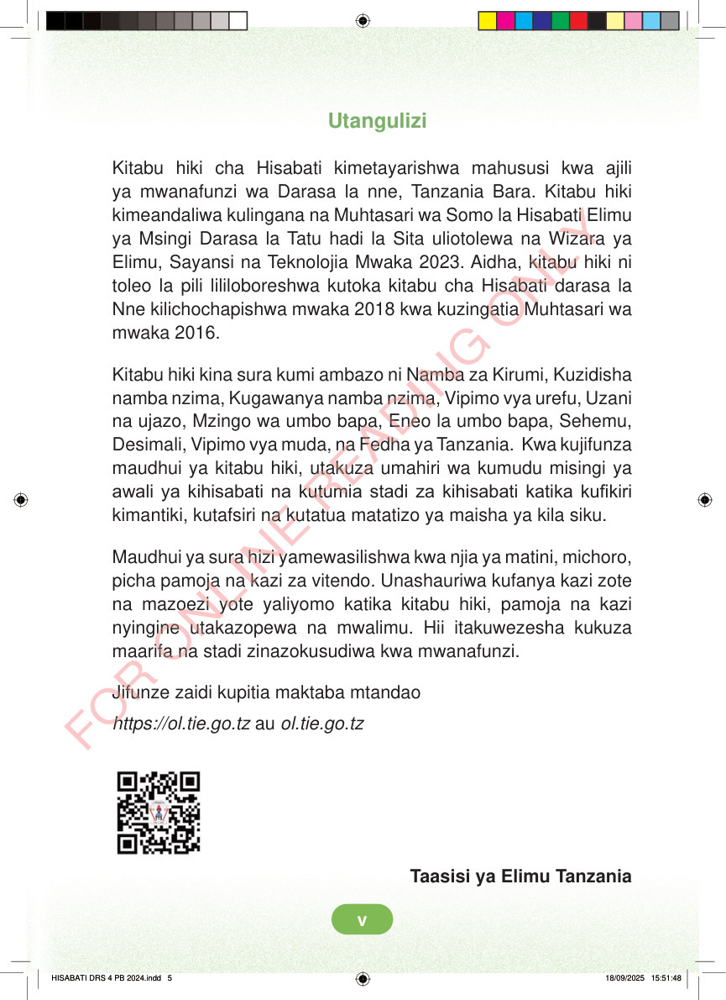

Utangulizi Kitabu hiki cha Hisabati kimetayarishwa mahususi kwa ajili ya mwanafunzi wa Darasa la nne, Tanzania Bara. Kitabu hiki kimeandaliwa kulingana na Muhtasari wa Somo la Hisabati Elimu ya Msingi Darasa la Tatu hadi la Sita uliotolewa na Wizara ya Elimu, Sayansi na Teknolojia Mwaka 2023. Aidha, kitabu hiki ni toleo la pili lililoboreshwa kutoka kitabu cha Hisabati darasa la Nne kilichochapishwa mwaka 2018 kwa kuzingatia Muhtasari wa mwaka 2016. Kitabu hiki kina sura kumi ambazo ni Namba za Kirumi, Kuzidisha namba nzima, Kugawanya namba nzima, Vipimo vya urefu, Uzani na ujazo, Mzingo wa umbo bapa, Eneo la umbo bapa, Sehemu, Desimali, Vipimo vya muda, na Fedha ya Tanzania. Kwa kujifunza maudhui ya kitabu hiki, utakuza umahiri wa kumudu misingi ya awali ya kihisabati na kutumia stadi za kihisabati katika kufikiri kimantiki, kutafsiri na kutatua matatizo ya maisha ya kila siku. Maudhui ya sura hizi yamewasilishwa kwa njia ya matini, michoro, picha pamoja na kazi za vitendo. Unashauriwa kufanya kazi zote na mazoezi yote yaliyomo katika kitabu hiki, pamoja na kazi nyingine utakazopewa na mwalimu. Hii itakuwezesha kukuza maarifa na stadi zinazokusudiwa kwa mwanafunzi. Jifunze zaidi kupitia maktaba mtandao https://ol.tie.go.tz au ol.tie.go.tz Taasisi ya Elimu Tanzania HISABATI DRS 4 PB 2024.indd 5 HISABATI DRS 4 PB 2024.indd 5 18/09/2025 15:51:48 18/09/2025 15:51:48